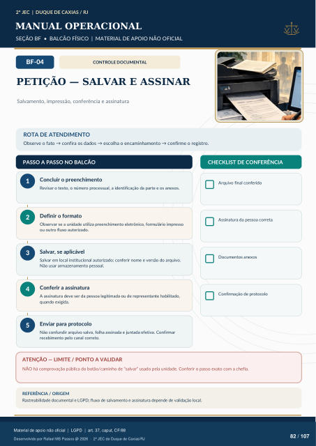

CONTROLE DOCUMENTAL
PETIÇÃO — SALVAR E ASSINAR
Salvamento, impressão, conferência e assinatura
ROTA DE ATENDIMENTO
Observe o fato → confira os dados → escolha o encaminhamento → confirme o registro.
PASSO A PASSO NO BALCÃO
CHECKLIST DE CONFERÊNCIA
Concluir o preenchimento
Revisar o texto, o número processual, a identificação da parte e os anexos.
Definir o formato
Observar se a unidade utiliza preenchimento eletrônico, formulário impresso ou outro fluxo autorizado.
Salvar, se aplicável
Salvar em local institucional autorizado; conferir nome e versão do arquivo. Não usar armazenamento pessoal.
Conferir a assinatura
A assinatura deve ser da pessoa legitimada ou de representante habilitado, quando exigida.
Enviar para protocolo
Não confundir arquivo salvo, folha assinada e juntada efetiva. Confirmar recebimento pelo canal correto. Arquivo final conferido Assinatura da pessoa correta Documentos anexos Confirmação de protocolo
ATENÇÃO — LIMITE / PONTO A VALIDAR
NÃO há comprovação pública do botão/caminho de “salvar” usado pela unidade. Conferir o passo exato com a chefia.
REFERÊNCIA / ORIGEM
Rastreabilidade documental e LGPD; fluxo de salvamento e assinatura depende de validação local.
Ver também o infográfico original (página 82)
